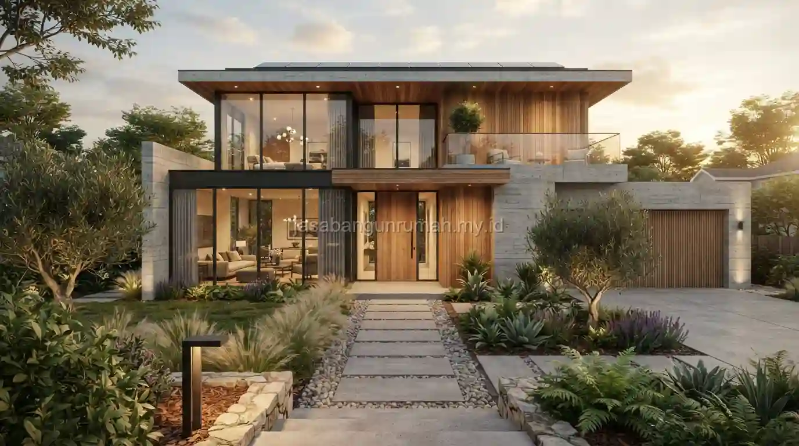

Daftar Isi
Jasa gambar arsitek melayani pembuatan denah, tampak, potongan, hingga gambar tiga dimensi visual dengan tarif yang umumnya dihitung berdasarkan luas bangunan dan tingkat kedetailan gambar yang dibutuhkan klien.
Apa Saja Jenis Layanan Gambar yang Tercakup dalam Jasa Ini?
Layanan mencakup gambar denah dasar, gambar tampak depan dan samping, gambar potongan bangunan, gambar tiga dimensi visual untuk presentasi konsep, hingga gambar kerja detail yang siap digunakan untuk pelaksanaan konstruksi.
Setiap jenis gambar memiliki fungsi berbeda, misalnya gambar denah dan tampak lebih berfokus pada tata ruang dan estetika fasad, sedangkan gambar kerja detail mencakup informasi teknis yang lebih mendalam seperti detail struktur dan spesifikasi material yang dibutuhkan tim konstruksi di lapangan.
Klien dapat memilih paket layanan sesuai kebutuhan, mulai dari sekadar gambar konsep visual hingga paket lengkap gambar kerja siap bangun. Beberapa jenis gambar yang umum dipesan:
- Gambar Konsep: Denah tata ruang dan visualisasi 3D fasad
- Gambar IMB/PBG: Denah, tampak, potongan, dan rencana pondasi untuk perizinan
- Gambar Kerja (DED): Detail arsitektur, struktur, dan mekanikal elektrikal lengkap
Bagaimana Tarif Jasa Gambar Arsitek Umumnya Ditentukan?
Tarif jasa gambar arsitek umumnya dihitung berdasarkan luas bangunan dalam meter persegi, dikalikan dengan tarif per meter persegi yang bervariasi tergantung tingkat kompleksitas desain dan kelengkapan gambar yang diminta.

Proyek dengan desain yang lebih kompleks, seperti bentuk bangunan tidak simetris atau kebutuhan detail struktur khusus, umumnya dikenakan tarif lebih tinggi dibandingkan desain sederhana berbentuk kotak standar.
Selain tarif per meter persegi, sebagian arsitek juga menawarkan paket harga tetap untuk jenis layanan tertentu, seperti paket gambar konsep visual tanpa gambar kerja detail, sehingga klien dapat menyesuaikan pilihan dengan kebutuhan dan anggaran yang tersedia.
Apakah Gambar yang Dihasilkan Memenuhi Standar Teknis Bangunan yang Berlaku?
Gambar yang disusun oleh arsitek berlisensi umumnya mengikuti standar teknis bangunan yang berlaku di Indonesia, termasuk pertimbangan keselamatan struktur dasar dan kesesuaian dengan ketentuan tata ruang setempat.
Kesesuaian gambar dengan standar teknis ini penting terutama apabila gambar tersebut akan digunakan untuk keperluan pengajuan dokumen legalitas bangunan, karena instansi terkait biasanya mensyaratkan gambar teknis disusun oleh tenaga ahli yang memahami standar tersebut.
Bagi calon pembangun yang mencari jasa gambar arsitek dengan tarif jelas dan standar teknis yang terjamin, dapat langsung menghubungi layanan jasa arsitek kami untuk mendapatkan penawaran sesuai kebutuhan proyek dan luas bangunan yang direncanakan.